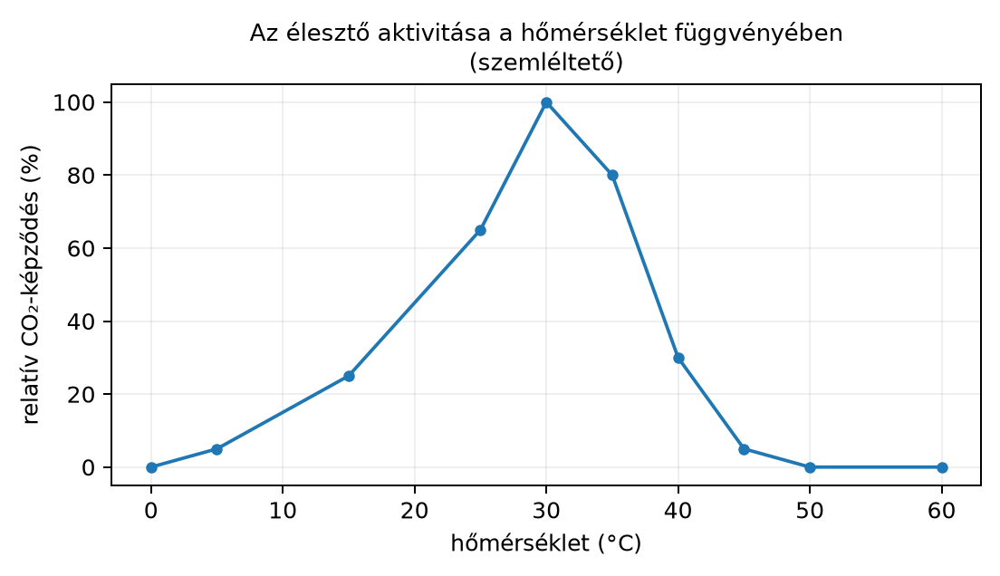

Reggeli termelés a cukrászüzemben: a briós tészta a kelesztőben áll, de fél óra után sem emelkedik. A felület száraz, a tészta hideg. Az első gondolat: „kevés az élesztő”. A hiba azonban gyakran ott van, hogy a felfuttató folyadék túl forró volt, vagy a kamra túl hideg. Ez az alfejezet az élesztő működését és az erjedést tanítja meg úgy, hogy a kelesztést ne véletlenül, hanem mérhető feltételekkel szabályozzuk.
A sütőélesztő egysejtű gomba, amelyet a gyakorlatban úgy képzelhetünk el, mint sok millió apró „CO₂-gyárat”, amelyet a tészta belsejébe kevertünk. Ha a körülmények kedvezőek, a sejtek cukrot bontanak, és közben szén-dioxid-buborékokat termelnek. A buborékok a sikérháló csapdájába kerülnek, feszítik a hálót, és a tészta térfogata nő.

Az ábra azt mutatja, hogy az élesztő 0–5 °C között gyakorlatilag inaktív, 25–30 °C körül a legaktívabb, 40 °C fölött gyorsan károsodik, 50 °C fölött gyakorlatilag nem termel gázt, 55–60 °C körül pedig elpusztul (ellenőrizendő: szakirodalom). Ezért a langyos folyadék és a mérsékelt tésztahőmérséklet a biológiai lazítás alapfeltétele.
Definíció. A biológiai lazítás olyan lazítási mód, amelyben élő mikroorganizmusok – leggyakrabban a sütőélesztő (Saccharomyces cerevisiae) – szén-dioxidot termelnek, és ez a gáz lazítja fel a tésztát.
Definíció. Az erjedés (fermentáció) az élesztő enzimjei által végzett anaerob lebontási folyamat, amelyben a cukorból etanol és szén-dioxid keletkezik.
A legismertebb erjedési egyenlet glükózra:
A sütőipari és cukrászati tésztákban a kiindulási cukor gyakran szacharóz, amelyet az élesztő saját invertáz enzimje glükózra és fruktózra bont. A liszt keményítőjéből is képződhet erjeszthető cukor: a liszt amiláz enzimei maltózzá bontják a sérült keményítőszemcséket, az élesztő maltáz enzime pedig a maltózt glükózzá alakítja. Ezért a tészta hosszabb kelesztése során akkor is képződik CO₂, ha a recept kevés hozzáadott cukrot tartalmaz. A tésztában lévő szacharózt az élesztő előbb hidrolizálja:
A folyamat során nemcsak szén-dioxid és etanol, hanem kis mennyiségű szerves sav, aromaanyag és hő is keletkezik. A savak enyhén csökkentik a tészta pH-ját, ami javítja az ízt, és mérsékelten gátolja a nemkívánatos baktériumokat. Az etanol nagyobb része a sütés közben elpárolog.
Szabály. Az erjedéshez az élesztőnek négy fő feltételre van szüksége: megfelelő hőmérsékletre, szabad vízre, tápanyagra és időre.
Az alábbi táblázat a legfontosabb feltételeket foglalja össze.
| Feltétel | Kedvező tartomány (tájékoztató) | Mi történik hiányakor vagy túllépésekor? |
|---|---|---|
| Hőmérséklet | 25–30 °C optimális (ellenőrizendő: gyártói adatlap) | 10 °C alatt nagyon lassú, 40 °C fölött károsodik, 60 °C közelében elpusztul |
| Nedvesség | lágy, rugalmas tészta; a víz folyadékfázisa | száraz tésztában lassú az enzim- és tápanyagszállítás |
| Tápanyag | hozzáadott cukor, sérült keményítőből képződő maltóz, ásványi anyagok | tápanyaghiányban gyengébb a gáztermelés |
| pH | enyhén savas, kb. 5–6 (ellenőrizendő) | szélsőséges pH gátolja az élesztőt |
| Idő | receptúra szerinti kelesztés | túl rövid: kisméretű; túl hosszú: túlkelt, savanyú |
Az erjedés szempontjából a hőmérséklet a leggyakrabban ellenőrzött paraméter. A friss élesztőt 25–30 °C-os folyadékban futtatjuk fel; a tészta bekeverés utáni célhőmérséklete általában 24–28 °C között van (ellenőrizendő: receptúra és gyártói javaslat). A kb. 4–60 °C közötti hőmérsékleti tartomány (a pontos határok forrásonként eltérnek; ellenőrizendő: hatályos NÉBIH-útmutató; a(z) Mikroorganizmusok: csoportok, életfeltételek és szaporodás alfejezetben használt értékkel egyezik) egyúttal mikrobiológiai veszélyzóna is, ezért a hosszú, meleg kelesztés során nemcsak az élesztő, hanem a káros baktériumok is szaporodhatnak. Ezért az időt és a hőmérsékletet a HACCP-eljárás szerint is figyelni kell.
Jogszabály. A 852/2004/EK rendelet (élelmiszer-higiénia) szerint a tésztakészítés során is meg kell előzni az élelmiszer szennyeződését és a kórokozók elszaporodását. A kelesztőkamra hőmérsékletét, a kelesztési időt és a tészta hőmérsékletét a cukrászüzemi HACCP-eljárásban célszerű rögzíteni; a konkrét határértékeket a NÉBIH útmutatói és a gyártói előírások tartalmazzák (ellenőrizendő: hatályos útmutató). A búzaliszt gluténallergén jelölési kötelezettségét a 1169/2011/EU rendelet II. melléklete szerint kell alkalmazni (ellenőrizendő: hatályos csoportmeghatározás).
Higiénia. A munka megkezdése előtt ellenőrizzük az élesztőt: friss élesztő legyen, világos, enyhén gyümölcsös illatú, ne legyen szürkült, foltos vagy kellemetlen szagú. A felfuttató edény tiszta legyen, mert a kovászosan szennyezett edény vadélesztőket és savképző baktériumokat vihet a tésztába. A langyos folyadék hőmérsékletét ne kézzel, hanem hőmérővel ellenőrizzük.
Az élesztő csak megtermeli a gázt; a tészta térfogatát az dönti el, hogy a buborékokat a sikérháló meg tudja-e tartani. A búzalisztben a gliadin és a glutenin fehérjékből dagasztás közben rugalmas, húzható-feszíthető sikérháló alakul ki. A CO₂-buborékok ennek a hálónak a falaiba szorulnak, és a növekvő gáz feszíti a falakat. Ezért a kelt tésztához erős, jó minőségű sikérű lisztet kell választani.
A nagyított metszeten (A) az ép sikérháló apró, megtartott buborékokat zár körül; (B) a gyenge, zsiradékkal bevont, szakadozott hálóban a buborékok összeolvadnak, felszakadnak, és a gáz kiszökik. A HTML-kiadásban az erjedési idő léptethető, a rétegek (háló, buborékok, zsiradék, élesztő, keményítő) ki-be kapcsolhatók.
Összefüggés. A biológiai lazítás sikeréhez két dolog kell egyszerre: elég CO₂-termelés és a gázt megtartó, sértetlen sikérháló. Ha a gáztermelés jó, de a háló gyenge, a buborékok összeolvadnak és a gáz kiszökik; a tészta összeesik vagy tömör lesz. Ha a háló erős, de a gáztermelés gyenge, a tészta szintén nem kel meg.
Továbbvitt eredmény. A sikér szerepét és az erjedés feltételeit a Tésztavezetés: közvetlen, közvetett és hideg tésztavezetés alfejezet használja tovább, ahol a különböző tésztavezetési módokon keresztül látjuk, hogyan szabályozzuk az időt, a hőmérsékletet és a dagasztást.
Kis mennyiségben a cukor az élesztő gyors tápanyaga, ezért az 5–8% körüli hozzáadott cukor általában serkenti a CO₂-képződést (a liszt tömegére számítva; ellenőrizendő: receptúra szerint). Nagy mennyiségben azonban a cukor ozmotikus nyomást fejt ki: elvonja a vizet az élesztősejttől, lassítja az enzimműködést, és gátolja a kelést. Ezért a gazdag, magas cukortartalmú tésztáknál – például briós, kalács, húsvéti fonott kalács – a szokásosnál több élesztőt adunk, és a cukrot esetleg több részletben keverjük a tésztába.
A cukor kettős hatását és a só gátlását a szemléltető görbék mutatják: a jelölt pontok a 12%-os brióstészta és az 5. feladat 20%-os cukortartalma; a szaggatott görbe az élesztőadag 3%-ról 4,5%-ra emelésének hatása. A HTML-kiadás kalkulátorában a cukor, a só, a zsiradék és az élesztő aránya állítható, és a becsült relatív kelési idő mellett figyelmeztetés jelenik meg, ha a só 2,5% vagy a cukor élesztőemelés nélkül 15% fölött van. A modell szemléltető, nem mért adat.
A só kis mennyiségben erősíti a sikérhálót, mert a sóban lévő ionok elősegítik a fehérjeszálak rendeződését. Emellett szabályozza az élesztő működését: mérsékelten visszafogja a túl gyors erjedést, és gátolja a vad élesztőket, savképző baktériumokat. A tipikus mennyiség a liszt tömegére számítva 1,5–2% (ellenőrizendő: receptúra). Ha a sót közvetlenül a felfuttatott élesztőre öntjük, a lokálisan magas sókoncentráció az élesztősejteket károsíthatja. Ezért a sót először a liszthez keverjük, és csak utána adjuk hozzá az élesztőt.
A zsiradék – vaj, margarin, sertészsír – lágyítja a tésztát, mert bevonja a sikérszálakat és a keményítőszemcséket. Így csökkenti a sikérháló összefüggő erejét, ezért kisebb lesz a gáztartó képesség, viszont a termék puhább, omlósabb lesz. A magas zsiradéktartalmú tészták általában lassabban kelnek, ezért több élesztőt igényelhetnek, és a vajat célszerű fokozatosan adagolni a már kialakult tésztához. A zsiradék késlelteti a víz és a sikér kapcsolatát is, ami a tésztavezetésnél fontos szempont.
Definíció. Túlkelesztésről akkor beszélünk, amikor a tészta az optimálisnál hosszabb ideig, vagy túl melegen kel, és az erjedés során felhalmozódó gázok, savak és alkohol károsítják a tészta szerkezetét.
A túlkelt tészta felülete ragacsos, szaga savanyú, erősen alkoholos. A sikérháló elgyengül, a gázbuborékok összeolvadnak, és a tészta összeesik. A sütőben már nem jön fel szépen, a héj vastag, a bélzet egyenetlen marad.
Hiba. Enyhe túlkelesztésnél a tésztát óvatosan átgyúrhatjuk, majd rövidebb időre újrakeleszthetjük. Erősen túlkelt, savanyú szagú tésztát ne dolgozzunk fel, mert a végtermék minősége nem javítható, és a savanyú íz is megmarad.
A biológiai lazítás során keletkező CO₂ tömegét a glükóz erjedési egyenletéből (, nem az égésből) tudjuk közelíteni.
Számítás. Először számítsuk ki, hogy 5 g glükóz teljes erjedésekor legfeljebb mennyi CO₂ keletkezik (szacharózra az eredmény kicsit nagyobb, kb. 2,6 g, mert a hidrolízis során víz épül be). A glükóz moláris tömege 180 g/mol, a keletkező 2 mol CO₂ tömege g.
Ez a tésztában lévő hozzáadott cukor egy részének maximális CO₂-hozama, ha az a cukor teljesen elerjed. A gyakorlatban a kelesztés során a tészta cukortartalmának csak egy része erjed, mert a tészta nem várja meg a teljes erjedést.
Számítás. Második példaként számítsuk ki a szükséges friss élesztő mennyiségét egy gazdag, 12% cukortartalmú brióstésztához, ha 1 kg lisztből dolgozunk. Az alap élesztőadag 3% lenne, de a magas cukortartalom miatt 4,5%-ra emeljük.
Tehát 1 kg liszthez 45 g friss élesztőt mérünk. A pontos érték a receptúrától, a liszt sikérminőségétől és a kelesztési hőmérséklettől függ; gyártói adatlapon és szakmai gyakorlatban ellenőrizendő.
A megkelt tészta jellemzői:
Tömör, lapos tészta, nem kel meg. Ok: hideg folyadék, kevés vagy elöregedett élesztő, esetleg túl forró folyadék, amely elpusztította az élesztőt. Megelőzés: hőmérővel ellenőrzött 25–30 °C-os folyadék, friss élesztő, receptúra szerinti adag. Javítás: ha a hőmérséklet a hiba, friss élesztővel újból bekeverni, a tésztát nem szabad melegen tartani.
Savanyú szagú, összeesett tészta. Ok: túlkelesztés, túl meleg kamra, hosszú idő. Megelőzés: hőmérséklet és idő naplózása, célhőmérséklet betartása. Javítás: enyhe túlkelesztésnél átgyúrás és rövid újrakelesztés; erős túlkelesztésnél selejtezés.
A tészta száraz, repedezett felületű. Ok: kelesztés közben huzat, a felület kiszáradt. Megelőzés: letakarással, megfelelő páratartalmú kamrában kelesztés. Javítás: a sütés előtt enyhén permetezni, de a tészta minősége már nem teljesen egyenletes.
Gyenge kelés, annak ellenére, hogy az élesztő friss. Ok: a sót közvetlenül az élesztőre tették, vagy túl sok cukor van a receptben, esetleg a zsiradékot túl korán, nagy adagban keverték be. Megelőzés: só a liszthez, cukor fokozatos adagolása, zsiradék későbbi beépítése.
Egy nyári reggelen a tanuló brióstésztát készít. A recept 10 g friss élesztőt ír elő; a tanuló a tűzhelyen melegített vizet hőmérés nélkül használja fel. A felfuttatott élesztő nem habzik, a tészta fél óra alatt sem kel. A tanuló hibát keres: a hőmérő 45 °C-ot mutat, ami az élesztőt már károsítja. A helyesbítés: az elrontott felfuttatást kiönti, új adag friss élesztőt 28 °C-ra hűtött, hőmérővel ellenőrzött vízben futtat fel. A tészta 40 perc alatt szépen megkel. Tanulság: az élesztő élő anyag, ezért hőfokát mérni és dokumentálni kell.
1. feladat (A). Fogalmazd meg röviden, mi a biológiai lazítás!
2. feladat (A). Írd fel az alkoholos erjedés egyenletét glükózra, és nevezd meg a két fő terméket!
3. feladat (B). 8 g glükóz teljes erjedésekor mennyi CO₂ keletkezik grammban? Használd a 180 g glükózra jutó 88 g CO₂ arányt.
4. feladat (B). Egy fonott kalácshoz 1,5 kg lisztet használsz, 10% cukorral. Az alap élesztőadag 3% lenne, de a magas cukortartalom miatt 4,2%-ra emeled. Hány gramm friss élesztőt mérj ki?
5. feladat (C). A recept a következő: 1 kg liszt, 20% cukor, 2,5% só, 20% vaj, 2% friss élesztő. Milyen kelési problémára számíthatsz? Melyik összetevő okozhatja a legerősebb gátlást, és hogyan lehetne a technológiát javítani?
6. feladat (D). Otthoni, kis adagos gyakorlat: fújtass fel 20 g friss élesztőt 100 ml 28 °C-os vízben 5 g cukorral. Tíz perc múlva figyeld meg a felszínt: mennyire habos? Ha nem habzik, mérj hőmérsékletet és ellenőrizd az élesztőt. Készíts rövid feljegyzést a megfigyelésről.
A biológiai lazítás élő mikroorganizmusok, leggyakrabban sütőélesztő által termelt szén-dioxiddal lazítja a tésztát. A CO₂-buborékok a sikérhálóban maradva növelik a térfogatot.
A két fő termék az etanol (alkohol) és a szén-dioxid.
Adott: , arány . Keresett: .
A tészta a gyakorlatban ennél kevesebb CO₂-t termel, mert nem várja meg a teljes cukorerjedést.
, .
A 20% cukor és a 20% vaj egyaránt lassítja az erjedést; a magas só szintén visszafogja a kelést. A tészta nagy valószínűséggel lassan kel, és a gáztartó háló is lágyabb. Javítás: az élesztőadagot emeljük 4–5%-ra, a cukor egy részét később adagoljuk, a vajat fokozatosan keverjük a már kialakult tésztába, és a kelesztést mérsékelt hőmérsékleten, kicsit hosszabb ideig végezzük.
Értékelési szempontok: a folyadék hőmérséklete 26–28 °C, a cukor feloldódott, az élesztő friss. Tíz perc alatt krémes, habos réteg képződik, enyhén élesztős illattal. Ha nem habzik, a hőmérséklet vagy az élesztő minősége a hiba. A gyakorlat kis adagban, háztartási körülmények között is biztonságosan elvégezhető, forró vízzel ne dolgozzunk.
A biológiai lazítás során a sütőélesztő cukorból szén-dioxidot és etanolt termel. A folyamat anaerob erjedés: . Az élesztő működéséhez megfelelő hőmérséklet (25–30 °C optimum, 60 °C közelében pusztul), nedvesség, tápanyag és idő kell. A liszt amilázai és az élesztő enzimjei a keményítőből is erjeszthető cukrot képeznek. A megtermelt CO₂-t a biztonságos sikérháló tartja meg, ezért a kelt tésztákhoz erős, jó sikérű liszt kell. Kis mennyiségű cukor serkenti, nagy mennyiség gátolja a kelést; a só erősíti a sikérvázt, de közvetlenül az élesztőre téve káros; a zsiradék lágyítja a tésztát, ezért mérsékli a gázmegtartást. A túlkelesztés savanyú, összeesett, ragacsos tésztát okoz, ezért a hőmérsékletet és az időt naplózni kell. A megkelt tészta térfogata nő, felülete sima, illata kellemes; a túlkelt tészta javítása erős túlkelesztésnél nem lehetséges. Továbbvitt eredmény: az erjedés feltételeit a Tésztavezetés: közvetlen, közvetett és hideg tésztavezetés alfejezetben használjuk tovább.
A fejezet a stabil élelmiszer-mikrobiológiai és cukrásztechnológiai alapokra épít. Ellenőrizendő pontok: a friss élesztő és a tészta célhőmérsékletei, a cukor- és sóadagok gátló hatása a gyakorlati sütőipari szakirodalomban; az élesztő törzsek hőmérsékleti optimuma és hőpusztulási határa; a kelesztőkamrák HACCP-paraméterei a NÉBIH és a 852/2004/EK rendelet szerint; a gluténallergén jelölés pontos csoportmeghatározása a 1169/2011/EU rendelet II. melléklete alapján; a felhasznált erjedési gázhozam elméleti értéke és a gyakorlati tésztaerjedés energia- és gázvesztesége. A gyártói élesztő-adatlapok és a szakági receptúrák mindig felülírhatják az itt jelzett általános értékeket.